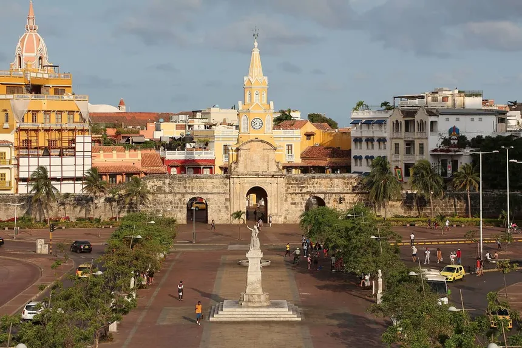
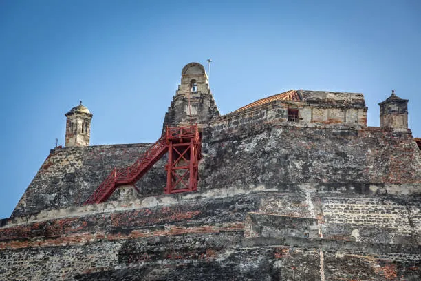
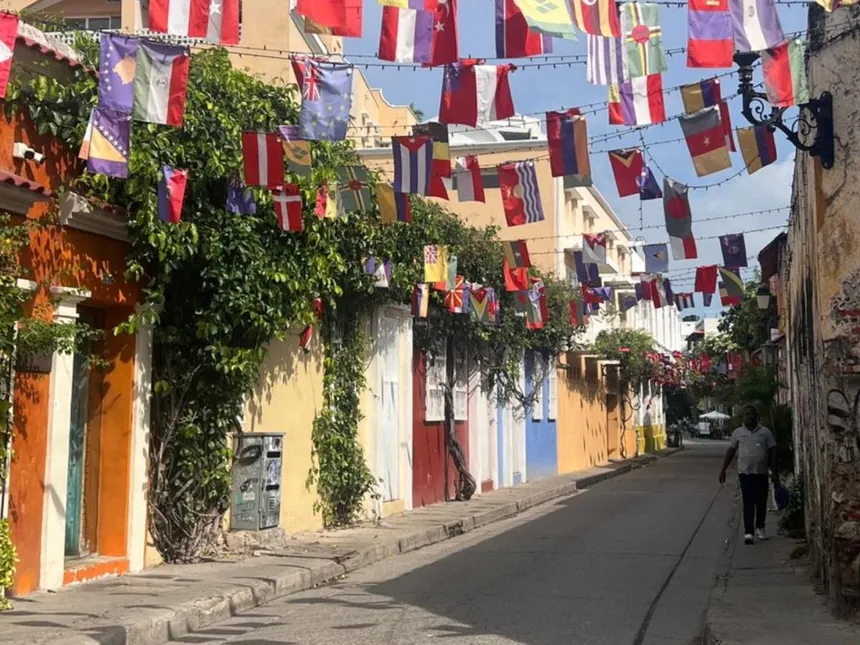

Cartagena de Indias
Información general
Cartagena de Indias es una ciudad portuaria con una larga historia colonial. Es conocida por su ciudad amurallada, sus balcones coloridos y su ubicación junto al mar Caribe. Su puerto, fortalezas y conjunto monumental forman parte del Patrimonio Mundial de la UNESCO.
Atractivos turisticos
Castillo de San Felipe de Barajas
Fortaleza construida durante la epoca colonial para proteger la ciudad.

Palacio de la Inquisicion
Edificio historico que hoy funciona como museo y permite conocer parte de la historia de Cartagena.

Convento de la Popa
Conjunto religioso ubicado en una elevacion desde donde se obtienen vistas panoramicas de la ciudad.

Gastronomia
Algunas comidas y preparaciones que se pueden probar:
Arroz con coco
Acompañamiento tipico que suele servirse con pescado.
Pescado frito y patacones
Plato frecuente en restaurantes de la costa y zonas cercanas a las playas.
Arepa de huevo
Preparacion tradicional que se puede comprar en puestos y locales de comida.
Sitios famosos
Ciudad Amurallada
Sector historico rodeado por murallas, con plazas, iglesias, balcones y calles tradicionales.
Barrio Getsemani
Barrio conocido por sus murales, arte urbano, plazas y ambiente cultural.
Torre del Reloj
Uno de los accesos mas reconocidos al centro historico.
Actividades para turistas
- Caminar por las murallas y el centro historico.
- Hacer un recorrido guiado por el Castillo de San Felipe.
- Conocer el arte urbano de Getsemani.
- Realizar excursiones en barco a islas cercanas con operadores habilitados.